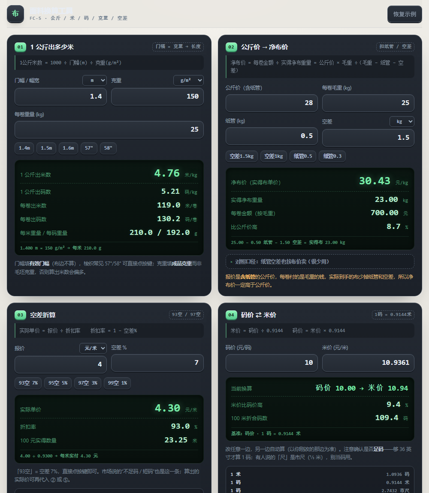
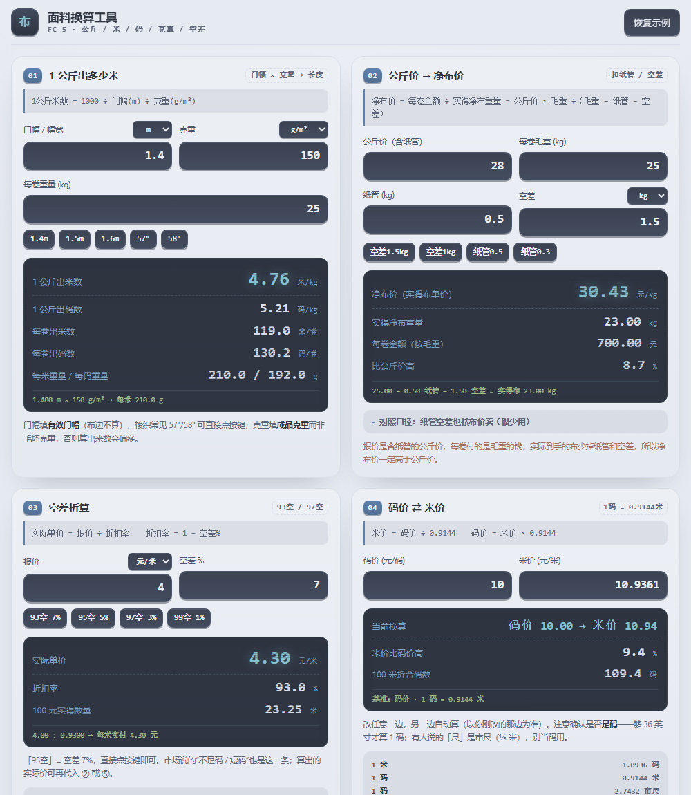
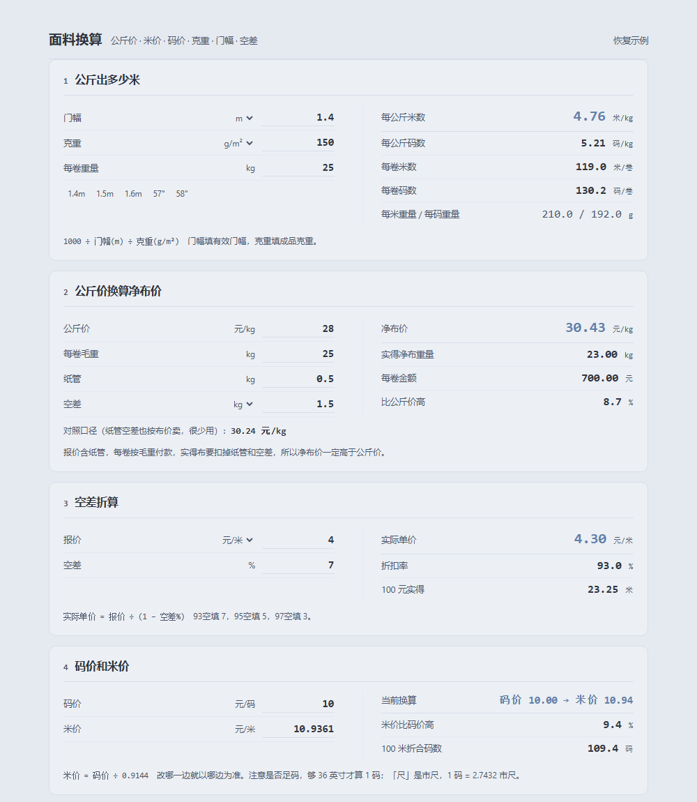

版本对比
四个版本都能点开用，功能完全一样（49 项自检全过），只有界面不同。看中哪个报编号。
1 · 原始版本
浅色卡片、蓝色强调、每张卡有公式条和快捷按钮

2 · 计算器皮肤
深色机身、绿色 LCD 屏、按键式输入、状态行

3 · Nord 计算器
同上，配色换成 Nord：Snow Storm 机身 + Frost 蓝屏

4 · 文档五板块（现在线上）
去掉装饰，五个带描边的板块，左边参数右边结果